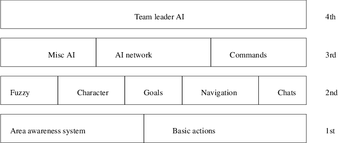

alien/models/players/alien/head_1.md3 alien/models/players/alien/lower_default.skin alien/models/players/alien/head_default.skin alien/models/players/alien/animation.cfg alien/models/players/alien/head.tga alien/models/players/alien/lower_1.md3 alien/scripts/Alien.bot alien/botfiles/bots/alien_i.c alien/botfiles/bots/alien_c.c alien/botfiles/bots/alien_w.c alien/botfiles/bots/alien_t.c alien/botfiles/bots/alien.bot
{
name Alien
model Alien
funname Alien
color 4
aifile bots/alien_c.c
}
#include "chars.h"
skill 1
{
CHARACTERISTIC_NAME "alien"
CHARACTERISTIC_GENDER "it"
CHARACTERISTIC_ATTACK_SKILL 0.75
CHARACTERISTIC_WEAPONWEIGHTS "bots/alien_w.c"
CHARACTERISTIC_AIM_SKILL 0.5
CHARACTERISTIC_CHAT_FILE "bots/alien_t.c"
CHARACTERISTIC_CHAT_NAME "alien"
...
CHARACTERISTIC_ITEMWEIGHTS "bots/alien_i.c"
CHARACTERISTIC_AGGRESSION 0.95
CHARACTERISTIC_SELFPRESERVATION 0.25
CHARACTERISTIC_VENGEFULNESS 0.95
CHARACTERISTIC_CAMPER 0.5
CHARACTERISTIC_EASY_FRAGGER 0.1
CHARACTERISTIC_ALERTNESS 0.5
}
chat "alien"
{
#include "teamplay.h"
type "game_enter"
{
"You cannot hide in ", 4, ". This we like.";
"We hunt. We kill. We feed. Queen happy.";
"We see ", 1, "! Good sacrifice for Queen. Much joy.";
"There will be much meat in ", 4, ". You will all die.";
}
type "game_exit"
{
"I go find Ripley.";
"I go find some space marines to play with now.";
4, " not good.";
1, " is like newborn from pod.";
}
...
}
//
// extra body features
//
{
BODY_NO_OF_SKULLS 3
BODY_NO_OF_BRAINS 3
BODY_NO_OF_ABDOMENS 16
BODY_NO_OF_ARMS 4
BODY_NO_OF_FISTS 4
BODY_NO_OF_FEET 4
BODY_NO_OF_FOREARMS 4
BODY_NO_OF_INTESTINES 32
BODY_NO_OF_LEGS 8
}
BODY_NO_OF_INTESTINES 32 BODY_NO_OF_ABDOMENS 32
import botlib, time
id = botlib.bot("localhost", 7000)
print "hello world, python is alive in Quake 3"
id.defaults()
print "bot is now active!"
id.disableAI()
while True:
print "trying to crouch"
id.crouch()
print "in crouch position"
time.sleep(1)
id.jump()
print "in jump position"
time.sleep(1)
id.fire()
print "fire"
time.sleep(1)
This document was produced using groff-1.22.